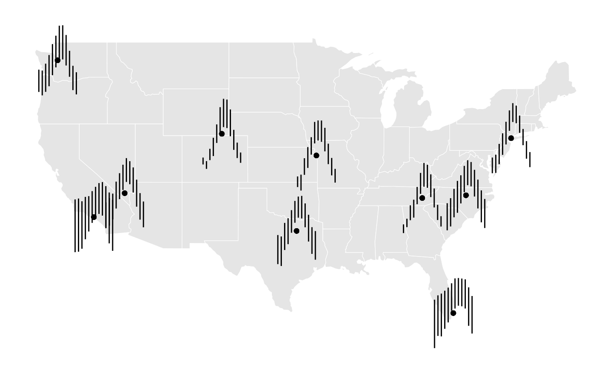

GeomSegmentGlyph
Nathan Yang
GeomSegmentGlyph.Rmd
library(stglpyhs)
library(dplyr)
#>
#> Attaching package: 'dplyr'
#> The following objects are masked from 'package:stats':
#>
#> filter, lag
#> The following objects are masked from 'package:base':
#>
#> intersect, setdiff, setequal, union
library(ggplot2)GeomSegmentGlyph
Glyph Maps allow data to be visualized across geographic regions and different periods of time (see cubble for more information). Line Segment Glyphs extend this by adding further options to visualize multivariate spatio-temporal data. The aesthetics are similar to that of geom_segment but with x and y major variables in order to designate glyph placement.
Monthly Temperatures Across the US
The National Oceanica and Atmosphere Administration (NOAA) provides
weather data from stations all over the US. The stations
dataset contains climate variables such as prerciptation, temperature,
and elevation from 10 different weather stations for every day from 2020
to 2023.
stations
#> # A tibble: 43,551 × 12
#> id long lat elev name wmo_id date prcp tmax tmin month year
#> <chr> <dbl> <dbl> <dbl> <chr> <chr> <date> <dbl> <dbl> <dbl> <dbl> <dbl>
#> 1 USC0… -83.4 35.7 1979. MT L… "" 2020-01-01 0 -1.1 -8.9 1 2020
#> 2 USC0… -83.4 35.7 1979. MT L… "" 2020-01-02 0 2.2 -8.9 1 2020
#> 3 USC0… -83.4 35.7 1979. MT L… "" 2020-01-03 356 8.3 1.1 1 2020
#> 4 USC0… -83.4 35.7 1979. MT L… "" 2020-01-04 178 7.8 1.7 1 2020
#> 5 USC0… -83.4 35.7 1979. MT L… "" 2020-01-05 3 1.7 -10.6 1 2020
#> 6 USC0… -83.4 35.7 1979. MT L… "" 2020-01-06 0 -0.6 -10 1 2020
#> 7 USC0… -83.4 35.7 1979. MT L… "" 2020-01-07 51 1.1 -7.2 1 2020
#> 8 USC0… -83.4 35.7 1979. MT L… "" 2020-01-08 76 -1.1 -9.4 1 2020
#> 9 USC0… -83.4 35.7 1979. MT L… "" 2020-01-09 0 -1.1 -8.9 1 2020
#> 10 USC0… -83.4 35.7 1979. MT L… "" 2020-01-10 5 2.8 -2.8 1 2020
#> # ℹ 43,541 more rowsFor this example, we are interesting in finding out the average
minimum and maximum temperature per month across all days and all years
per each station. We do this by using the dplyr functions
group_by and summarise
grouped <- stations |>
group_by(month, name, long, lat) |>
summarise(
avgmin = mean(tmin, na.rm = TRUE),
avgmax = mean(tmax, na.rm = TRUE)
)
#> `summarise()` has grouped output by 'month', 'name', 'long'. You can override
#> using the `.groups` argument.With the default rescaling parameters, this is the resulting geom segment glyph along with a geom_point to help illustrate the station location that each segment glyph corresponds to.
ggplot(data = grouped) +
geom_sf(data = mainland_us, color = "white") +
ggthemes::theme_map() +
geom_point(aes(x = long, y = lat)) +
geom_segment_glyph(
width = 0.4,
height = 0.1,
aes(
x_major = long,
y_major = lat,
x_minor = month,
y_minor = avgmin,
yend_minor = avgmax)
) GeomSegmentGlyph additionally offers ways to rescale the glyphs. Here, we can specify rescale11x as the preferred rescaling for x to center the glyph on the station.
ggplot(data = grouped) +
geom_sf(data = mainland_us, color = "white") +
ggthemes::theme_map() +
geom_point(aes(x = long, y = lat)) +
geom_segment_glyph(
x_scale = rescale11x,
width = 2,
height = 0.1,
aes(
x_major = long,
y_major = lat,
x_minor = month,
y_minor = avgmin,
yend_minor = avgmax)
) 
Furthermore, there are options for y-scaling that include centering the glyph vertically on the station location.

These rescaling past examples have all been made with global rescaling enabled (default) which results in the glyphs being differently sized according to their values relative to each other. Turning off global rescaling allows all glpyhs to rescale within their own individual values and produce glyphs that sized more evenly.
ggplot(data = grouped) +
geom_sf(data = mainland_us, color = "white") +
ggthemes::theme_map() +
geom_point(aes(x = long, y = lat)) +
geom_segment_glyph(
x_scale = rescale11x,
y_scale = rescale11y,
global_rescale = FALSE,
width = 2,
height = 3,
aes(
x_major = long,
y_major = lat,
x_minor = month,
y_minor = avgmin,
yend_minor = avgmax)
) 
Observations and Insights
Line Segment Glyphs offer unique insights into seasonal temperature trends across the US. Turning off global rescaling shows that most stations generally followed the same curvature trends relative to their lowest temperatures. However factoring in global rescaling, certain locations show much less total variation in temperature such as California and Florida.